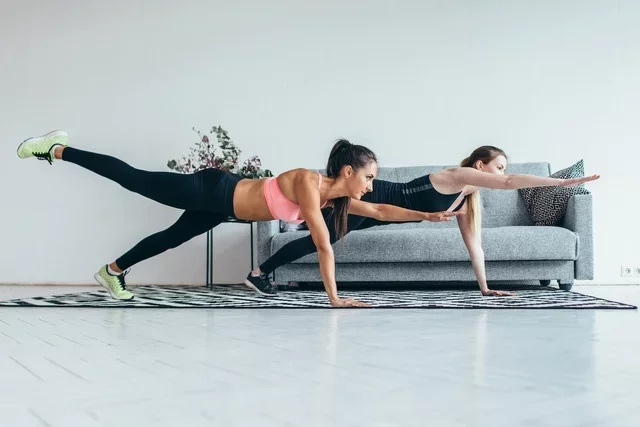

7 Exercícios para treino de ombro em casa
O treino de ombro em casa é simples, fácil e ajuda a atingir diferentes objetivos, desde tonificar, melhorar a estabilidade e força dos músculos deltoide, trapézio e dos braços, aumentar o volume muscular até hipertrofia do ombro e deve ser adicionado à rotina de exercícios semanais.
Para melhores resultados, esses exercícios para o ombro devem ser feitos com a utilização de pesos como garrafa pet com areia ou mochilas com pacote de arroz ou feijão, ou halteres, barra ou kettlebell, por exemplo. No entanto, é importante ter em consideração as condições físicas e as limitações do corpo para evitar qualquer tipo de lesão como ruptura do deltoide ou tendinite, por exemplo.
Por isso, o ideal é fazer uma avaliação médica antes de iniciar qualquer atividade física e ter orientação de um educador físico que deve indicar o peso para cada exercício de forma individualizada.
Como fazer o treino de ombros
O treino de ombro em casa pode ser feito de 2 a 3 vezes por semana, em 2 a 3 séries de 10 a 12 repetições, dependendo do exercício. O ideal é escolher de 3 a 4 exercícios por treino.
É importante fazer aquecimento antes dos exercícios, sendo uma boa opção movimentar os braços para cima e para baixo de forma alternada, várias vezes num ritmo acelerado ou fazer polichinelo, por exemplo.
Algumas opções de exercícios para fazer um treino de glúteos em casa são:
1. Flexão com pés elevados

A flexão com os pés elevados é um exercício que ajuda a trabalhar a força e a resistência dos deltoides, tríceps e bíceps. Para realizar esse exercício, deve-se usar uma superfície para criar inclinação do corpo como banquinho, cadeira, puff, bola de ginástica ou uma plataforma de exercício de step.
Como fazer: apoiar os pés na superfície inclinada, e elevar o corpo esticando os braços, com as mãos afastadas um pouco mais que a largura dos ombros. O corpo deve ficar reto e com as costas alinhadas com o tronco. Contrair o abdômen, flexionar os cotovelos até que o peito fique próximo ao chão e retornar à posição inicial.
2. Elevação lateral
A elevação lateral trabalha a força e a resistência dos músculos deltoide, trapézio e infra-espinhal. Esse exercício deve ser feito com o uso de peso como garrafa pet com água ou areia ou mochilas com 1 ou 2kg de arroz ou feijão em cada uma, ou uso de halteres.
Como fazer: de pé, com os pés afastados na largura do quadril e os braços ao longo do corpo, segurar um peso em cada mão. Com o abdômen contraído, levantar os braços para os lados, sem flexionar os cotovelos e com as palmas das mãos voltadas para baixo, até que fiquem no nível dos ombros. Abaixar os braços lentamente.
3. Elevação frontal

A elevação frontal é outra boa opção de exercício para trabalhar a força e a resistência dos músculos deltoide e trapézio, além de estimular o aumento da massa e do volume muscular. Para alcançar esses objetivos, deve-se usar pesos como garrafa pet com areia dentro ou duas mochilas com pacotes de 1kg de arroz ou de feijão, por exemplo, ou halteres caso os tenha.
Como fazer: com os braços alinhados à frente do corpo, segurar o peso com as palmas das mãos voltadas para dentro e à largura dos ombros. É importante que os braços estejam completamente esticados e abdômen contraído. Levantar o peso para a frente e para cima até o nível dos ombros, expirando enquanto os braços sobem e inspirando quando descem. Voltar à posição inicial.
4. Prancha com elevação de braço
A prancha com elevação de braço é considerada um exercício completo, pois trabalha a força e a estabilidade dos deltoides, abdômen, core e outros músculos do corpo como os bíceps e tríceps. Neste exercício não é necessário uso de pesos ou halteres.
Como fazer: deitar de barriga para baixo e então elevar o corpo, apoiando no chão as mãos e as pontas dos pés, sempre com o abdômen e glúteos contraídos e cabeça e corpo retos, alinhados com a coluna vertebral. Levantar uma perna, alinhada ao corpo e estender o braço oposto da perna, por exemplo, se levantar a perna esquerda, estender o braço direito à frente. Voltar o braço à posição inicial e, em seguida, estender o braço para o lado, mantendo a perna elevada. Fazer 10 a 15 repetições com o braço direito e depois com o braço esquerdo. Este exercício não é feito em séries, no entanto se o objetivo é aumentar a força muscular, pode-se fazer de 2 a 3 séries. Caso o exercício seja muito difícil é possível realizá-lo sem elevar a perna.
5. Desenvolvimento

O exercício de desenvolvimento dos ombros permite fortalecer e desenvolver os músculos deltoides anterior e lateral, além de trabalhar os tríceps, o trapézio e o peitoral superior, sendo uma boa opção para pessoas que desejam hipertrofia do ombro. Esse exercício deve ser feito com o uso de peso como um ou mais pacotes de 1kg de arroz ou de feijão dentro de uma mochila, usar garrafa pet com areia dentro, por exemplo, ou utilizar halteres, caso os tenha.
Como fazer: sentar em um banco ou cadeira e colocar os pesos de forma que o braço e o antebraço formem um ângulo de 90 graus. É importante que as palmas das mãos fiquem voltadas para a frente, as costas sempre retas e o abdômen contraído. Levantar os pesos até ficar com os braços esticados e retornar à posição inicial.
6. Remada alta

A remada alta é um exercício que trabalha a força, sustentação e equilíbrio dos músculos deltoide e trapézio, além do peitoral superior, e deve ser feito com uso de peso como garrafa pet com água ou areia dentro ou usar uma barra ou halteres, caso tenha esses materiais.
Como fazer: de pé, com as pernas afastadas na largura dos ombros, segurar a barra à frente do corpo com os braços estendidos, a palma das mãos voltadas para dentro do corpo, abdômen contraído e costas retas. Puxar o peso para cima, levantando o cotovelo até a altura dos ombros. Retornar à posição inicial.
O que fazer depois do treino
Após o treino de ombro, deve-se fazer alongamentos para ajudar a relaxar a musculatura, tonificar os músculos, melhorar a flexibilidade, aumentar a circulação e prevenir lesões.
1. Alongamento sobre a cabeça
Esse alongamento, permite alongar os deltoides, trapézio, peitoral e coluna, e deve ser feito em pé ou sentado.
Como fazer: levantar um braço e dobrar o cotovelo, colocando a mão em direção às costas ou nuca. Com o outro braço, puxe o cotovelo em direção à cabeça para alongar o tríceps. Fazer esse movimento por 20 a 30 segundos. Repetir com o outro braço. Esse exercício não é feito em séries.
2. Alongamento de braços cruzados

O alongamento de braços cruzados permite alongar os músculos do ombro e do bíceps.
Como fazer: de pé, com as pernas afastadas na largura dos ombros e joelhos levemente flexionados, colocar o braço direito atravessado na frente do corpo, na altura dos ombros. Com o braço esquerdo, segurar o braço direito nesta posição pressionando o braço direito no peito. Manter essa posição por 20 a 30 segundos e repetir com o braço esquerdo. Pode-se fazer 3 a 4 repetições para cada braço.